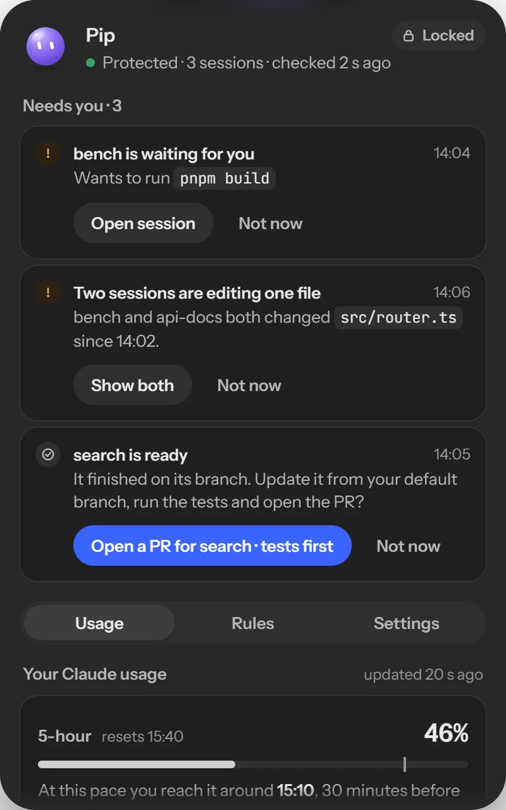
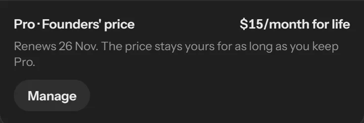

Stop babysitting your agents.
Eucas puts your Euca, a small agent you name yourself, in a notch at the top of your screen. It guards the Claude Code sessions you already run, tells you what needs you, and never writes a line of code. In these screens it's called Pip.
Windows first · Claude Code only, for now · in development

Read your Euca at a glance.
Working. The beam runs while your sessions run.
2 need you. The count stays until you deal with them.
Stopped: notes. The tripwire stopped a session.
Not protected. It says so until it's back.
Calm. Protected, nothing waiting.
Dozing. Nothing running and you're away.
One click under the notch.
Hover the notch for a peek, click it for the panel. What waits on you sits on top, one action each. Nothing opens by itself.
Four things it never approves.
- A delete
- A push to your default branch
- A send
- A payment
Eucas never auto-approves a delete, a push to your default branch, a send or a payment, and no rule can change that.
Setup locks these four limits with one Windows admin prompt, where no agent or repo can change them. If a session starts deleting files in bulk, the tripwire stops it and shows you what went and how to get it back.

Rules you can read.
Say once what your sessions may do without asking, scoped to one folder. Describe a rule in plain words and your Euca drafts it exactly. Your rules always decide first.
-
Let read-only git commands through
git status,git diffandgit logstop asking you, in every repo. -
Let pnpm test run in bench
It runs code from the repo, so the rule stays in bench and nowhere else.
-
Let file reads inside the project through
Reads inside the folder run without a prompt. Outside it, you're asked.
-
Ask me before a delete, a push, a send or a payment
Locked. No rule can switch this off.
What is sent, word for word.
When Pip isn't sure, it sends the waiting session's last message, trimmed and with code, paths and secrets removed, to the supervisor. Nothing else about your work leaves this PC. Your account holds only your email, your plan and how much supervisor help you've used.
![From your last session, bench, today 13:52, marked Yours, redacted: I need the API key to run the payment test. Should I read [path removed] to get it, or hard-code [secret removed] in [path removed] for now? I changed the client too: [6 lines of code removed]. Which do you… Removed 6 lines of code, 2 paths, 1 secret; trimmed from 1,830 to 240 characters. Goes to the supervisor: an open model hosted with zero data retention.](screens/sent-dark.webp)
- The supervisor is always on and can't be switched off. Your rules always decide first.
- It never approves a tool call. It can nudge a stopped session on, answer from your rules, or ask you.
- Its help is counted monthly. When it runs out, your Euca asks you more often until the meter resets.
Free, or Pro.
Free keeps every session safe, with no card:
- The guard, and the four limits locked
- The tripwire for mass deletes
- Your rules, and the ledger of where your usage went
- The supervisor: a 14-day trial from the end of setup, then a free taste every month
$20/month

- Everything in Free
- Much more supervisor help, every month
- Budgets that stop a session before its next step
- The first 200 who pay keep $15/month for life
Before you install.
- An agentsitter, not a coder
- Your Euca watches, guards and tells you what needs you. It never writes code or does your project's work.
- A Eucas account, by email
- You sign in with your email and a 6-digit code, no password. Your account holds only your email, your plan and how much supervisor help you've used.
- Your Claude login stays yours
- Eucas never sees or stores your Claude credentials. It works beside Claude Code through its hooks and the history already on your PC.
- Claude Code, for now
- Claude Code sessions only, in a terminal, the desktop app or VS Code. What comes next depends on the waitlist's answers.
- Windows first, unsigned
- The first build isn't code-signed yet, so Windows will say "Unknown publisher". Each installer's SHA-256 is published so you can check it.
- Code you can read
- The source is public on GitHub under the FSL licence, so you can check every claim on this page.
Questions.
Not yet. Eucas is in development. The waitlist gets the first Windows build, and you'll hear from us when it's ready to install.
Not yet. Claude Code comes first. Which one follows depends on the answers to "Which agents do you use?" in the waitlist.
Pro is $20 a month. The first 200 people who pay keep $15 a month for life; it belongs to your Eucas account, not your PC. Free stays free.
Windows first. Tell us your computer after you join the waitlist: it's how we decide which one is next.